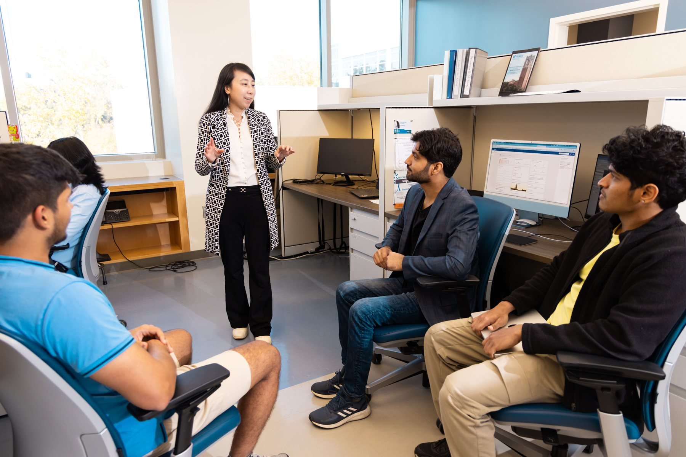
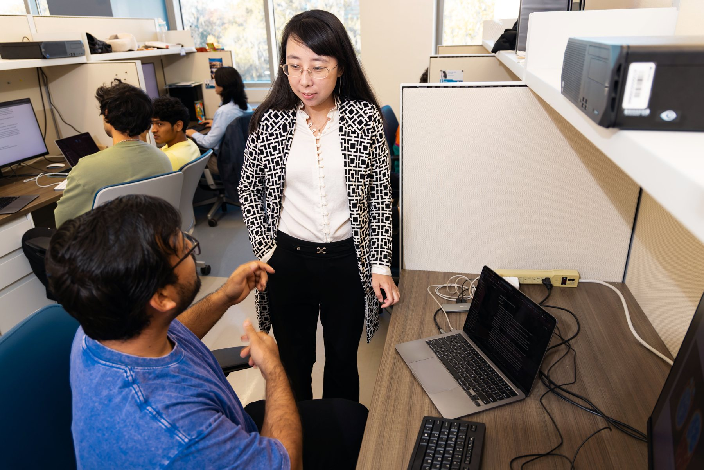
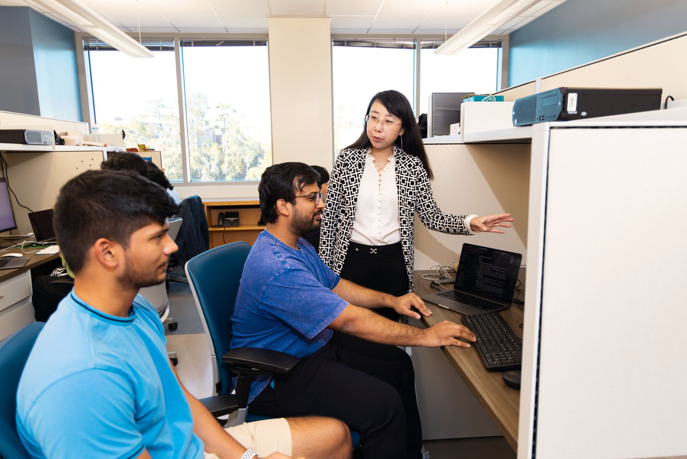

Upcoming
2027 · date to be announced
VCII Opening Retreat
A half-day event with the Advisory Board and key faculty to highlight work across Vanderbilt Health and launch the first collaborative projects.
Ask about attending →Events
Retreats, seminars, and working sessions for clinicians, scientists, engineers and partners.

2027 · date to be announced
A half-day event with the Advisory Board and key faculty to highlight work across Vanderbilt Health and launch the first collaborative projects.
Ask about attending →
October 2026
Dr. Ruogu Fang presented VCII's vision, "From Images to Intelligence: Foundation Models, Digital Twins, and Agentic AI," to the VUIIS community.

September 2026
"Multimodal AI for Precision Brain Health: From Digital Twins to Foundation Models and Agentic AI," at the Vanderbilt Institute for Surgery and Engineering.